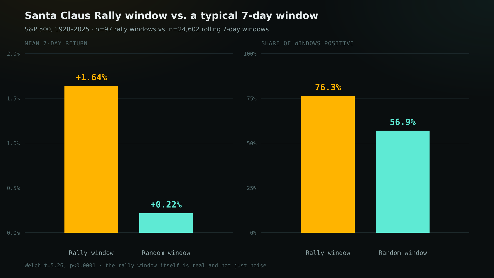
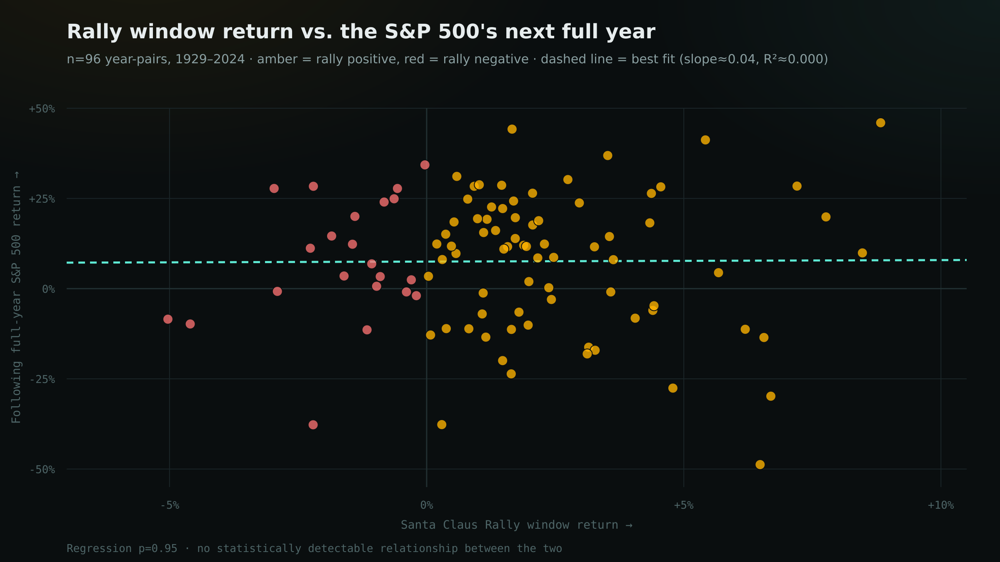

Does the Santa Claus Rally Predict the Next Year? A 97-Year Test
Every December, market commentary reaches for the same seasonal indicator: the Santa Claus Rally, coined by Yale Hirsch in the Stock Trader's Almanac in 1972 and defined precisely — the last five trading days of December plus the first two trading days of January. Hirsch's own line about it is the part that actually gets quoted: "If Santa Claus should fail to call, bears may come to Broad and Wall." The implication is that this seven-day window isn't just a curiosity — a weak one is a warning sign for the year ahead.
That's two separate, checkable claims stacked on top of each other. First: is the window itself unusual — does the S&P 500 actually behave differently over these specific seven trading days than it does over a random seven trading days? Second, the one that actually gets used as a forecasting tool: when the window is negative, does the following year tend to be worse? I pulled 97 years of daily S&P 500 data and tested both.
Short version: the rally itself is real and statistically significant. The omen is not — a negative Santa Claus Rally window has no detectable relationship with how the following year turns out, in the full sample or in either half of it.
Methodology
I used a daily U.S. equity price series assembled from Robert Shiller's data, Yahoo Finance's S&P 500 history (^GSPC, June 1962–June 2023), and SPY ETF prices since (June 2023–present), maintained as a public GitHub dataset. That source's own documentation flags that data before January 1928 is a Dow Jones composite portfolio, not the S&P 500 — so I restricted the analysis to January 3, 1928 through the data's current vintage, December 19, 2025, the period the source itself labels S&P 500 price data. Trading days are as recorded in that series (weekends and NYSE holidays already excluded).
For each December from 1928 to 2024, I took the last 5 recorded trading days of that month and the first 2 trading days of the following January — Hirsch's exact definition — and computed the return from the close just before the window starts to the close on the window's last day. That gives 97 rally windows. To test whether this window behaves differently from an arbitrary seven-day stretch, I computed the return of every possible rolling 7-trading-day window across the same 1928–2025 span (24,602 of them) as a baseline. To test the "omen," I paired each rally window with the full calendar-year return (first trading day to last trading day) of the January immediately following it, split into years that followed a positive vs. a negative rally window, and compared the two groups — 96 pairs have a complete following year in this dataset; the January 2025 window is the 97th but its year isn't over yet, so it's reported separately, not folded into the statistics.
Claim 1: is the window itself unusual?
Yes, clearly. Across the 97 rally windows, the S&P 500 returned a mean of +1.64% (median +1.48%) and was positive 76.3% of the time. Across all 24,602 possible rolling 7-trading-day windows in the same period, the mean return was +0.22% and the positive rate was 56.9%. A Welch's t-test comparing the rally-window sample to the full population of 7-day windows gives t = 5.26, p < 0.0001 — this is not noise dressed up as a pattern. Whatever the cause (holiday-thinned trading volume, institutional book-squaring, retail flows around bonuses, light-volume markets amplifying whatever the marginal buyer wants to do), the window genuinely behaves differently from an average week.

Claim 2: does a weak rally predict a weak year?
This is where the folklore breaks down. Splitting the 96 complete year-pairs by whether the preceding rally window was positive or negative:
| Group | n | Mean next-year return | Median next-year return | Year positive |
|---|---|---|---|---|
| All years | 96 | +7.56% | +11.08% | 66.7% |
| After positive rally | 74 | +7.50% | +11.61% | 66.2% |
| After negative rally ("failed to call") | 22 | +7.77% | +5.19% | 68.2% |
Next-year return = S&P 500's first trading day to last trading day return for the January immediately following the rally window. 1929–2024 (n=96); 2025's pending year is excluded from these statistics.
The mean return after a negative rally (+7.77%) is not lower than after a positive one (+7.50%) — if anything, marginally higher, and a Welch's t-test says the two groups are statistically indistinguishable: t = −0.06, p = 0.95. Regressing next-year return on the rally window's own return gives a slope of 0.04 and an R² of 0.00003 (p = 0.95) — essentially zero explanatory power. The scatter below is what that looks like: amber dots (positive rally) and red dots (negative rally) are interleaved across the entire vertical range, and the best-fit line is flat.

The effect doesn't hide in a subsample either. Splitting the data in half at 1977: in 1929–1976, years after a positive rally averaged +5.47% vs. +5.05% after a negative one; in 1977–2024, +9.89% vs. +9.32%. Both halves show the same story as the full sample — a trivial, statistically meaningless gap, not a reversal, not a strengthening. This isn't a case where the pattern used to work and faded, the way some calendar effects in this series have turned out to be. It looks like it never worked as a forecast, in any era tested.
The two most recent complete observations make the point concretely. The rally window heading into 2024 was slightly negative (−0.83%) — Hirsch's aphorism would call that bearish. The S&P 500 returned +24.0% in 2024. The window heading into 2025 was also slightly negative (−0.46%, per this dataset's December 19, 2025 vintage) — 2025 is running at roughly +16.4% through the same cutoff, with the year not yet over. Two data points prove nothing on their own; they're consistent with, not additional evidence for, the null result above.
Bottom line
- The Santa Claus Rally window is real. The last 5 trading days of December plus the first 2 of January outperform a typical 7-day stretch by a wide, statistically significant margin (t = 5.26, p < 0.0001), and the effect reproduces closely against the Almanac's own published 1950–2022 figures.
- The bearish omen is not. Whether that window is positive or negative has no detectable relationship with how the following calendar year performs — not in the full 96-year sample, and not in either half of it.
- Both parts of the aphorism get repeated together every December. Only the first half has data behind it.
Limitations
- Price only, no total return. This tests index price levels, which is how Hirsch's original almanac indicator is defined and how it's commonly discussed — it does not include dividends, so it isn't a statement about what an actual buy-and-hold investor earned.
- The rolling 7-day baseline isn't fully independent. Adjacent rolling windows overlap heavily (each day's window shares 6 of 7 days with the next), so the 24,602-window baseline has far less than 24,602 independent observations. The t-test in Claim 1 likely understates its own p-value's uncertainty somewhat for that reason — though a gap this large (1.64% vs. 0.22% mean, 76% vs. 57% hit rate) is unlikely to be an artifact of that alone.
- 96 year-pairs is not a large independent sample for the "does it predict the year" test, and calendar years aren't independent draws — a multi-year regime (the 1990s bull market, 2008–09) can dominate several of them from one underlying cause. That said, the null result here isn't a borderline call sitting near a significance threshold; it's a coefficient statistically indistinguishable from exactly zero, in the full sample and in both era-split halves.
- Data vintage. The underlying series runs through December 19, 2025 at the time of writing, so the most recent rally window (heading into 2025) and its "year" are necessarily incomplete and excluded from the statistical tests, reported only as an illustrative aside.